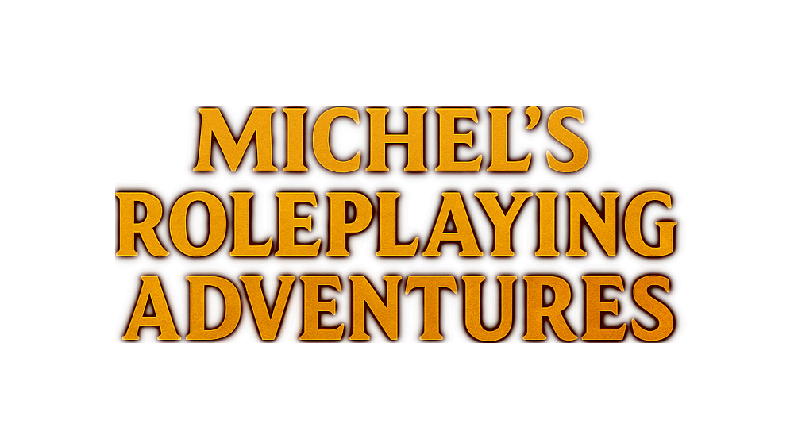

A unique blend of theater, roleplaying, and adventure based on Dungeons & Dragons 5th Edition (DND 5E). Perfect for beginners and experienced players seeking everyday magic and excitement.
The DM is me, Michel, with over 9 years of experience as a game master with various groups worldwide! I’ve played with everyone from beginners to seasoned players.
I’m a master’s student in the history of religion and religious behavioral science with an academic background in theater, religious anthropology, occultism, magic, and alchemy. I combine my knowledge of theater, ritual studies, and storytelling to create atmospheric adventures with intricate plots and diverse personalities and voices.
Adventures are primarily held in English but are also offered in Swedish upon request.
Game sessions take place in Malmö/Lund, at your location, or in a public venue. Travel within Skåne or Sweden is possible by agreement.
Everyone! Suitable for birthdays, bachelor/bachelorette parties, or evening activities. Perfect for both beginners and experienced players. Ages 12+ and up!
From vampires, zombies, and demon hordes to political dramas or mysterious mages. Adventures are tailored to the group’s preferences or choose a pre-written adventure. All adventures are personally written by me!
Types of Adventures
1. Short one-shot
2. Longer one-shot
3. Recurring sessions
4. Custom adventures by agreement
Pre-written Adventures
Choose from one of three shorter pre-written adventures (4-5 hours):
’The Mystery of the Sudden Plague’ - beginner
’Into the Mines’ - beginner/intermediate
’The Illithids’ Secrets’ - intermediate/advanced
Choose from one of two longer pre-written adventures (6-7 hours):
TBD - Contact for further info
After gathering at the agreed time, we start with a brief introduction; we distribute dice and “character sheets” (who you are, how you look, your personalities, and abilities), address any questions, and prepare for the world. (Approx. 15 min).
We then begin playing, addressing questions as they arise.
After about 1.5h - 2h, we take a 30-minute break (longer if desired) to catch some air, use the restroom, and possibly eat/drink something.
After the break, we dive back in, working toward the finish line, fighting for our lives, and hopefully overcoming the challenge!
We conclude with a brief reflection, discussing your experience and any comments or thoughts.
There are three rule sets to choose from:
Simple - A streamlined game requiring minimal thought. Based on a custom framework that simplifies gameplay by removing much of the bookkeeping, allowing faster and easier actions. Recommended for beginners and those wanting to try the game and have fun without overthinking.
Advanced - Fully based on the DND 5E framework for rolling dice, moving on the map, and combat. Requires prior knowledge, and players are responsible for being informed about the rules.
Hybrid / Intermediate - A mix of simple and advanced. Uses the simpler framework but with more elements of bookkeeping and battlefield positioning. Players are recommended to understand the basics or be prepared to listen carefully to initial instructions. Players are still responsible for understanding the game enough to maintain a smooth flow. The DM disclaims responsibility for any misunderstandings or frustrations that may arise if players are not on the “same page.”
Why is the time range between 4-5 hours and 6-7 hours?
Depending on how you play (and collaborate), you may finish faster or slower. Think of it like an escape room; the time varies based on how you approach the game. Regardless, you’ll play for the allocated time.
Are there any preparations we need to consider before playing?
Great question, thanks! Before starting, it’s recommended to use the restroom, eat something, and prepare snacks if desired. Also, inform loved ones you’ll be occupied and set your phones to silent. Think of it like a movie visit: you don’t want to miss the film!
You mention phones; are they allowed during the session?
Another great question! The answer is no. Phones are not allowed during the session unless you’ve notified us beforehand that you need to keep your phone on (e.g., for children or a situation requiring monitoring). This is an interactive experience that relies on focus and presence. The game is best when you fully step into your role and focus on the world! Phones “break immersion” for both you and me, making the game less enjoyable. Phones are fine during breaks!
If we want to prepare for the game, e.g., get familiar with characters/rules, is there anything we can do?
Absolutely! You’ll get access to your characters, the chosen rule set, and helpful tips to prepare.
Do we have to “roleplay”?
No. There are two ways to play:
a) Describe what your character does in third person, and it happens, or
b) Act as your character and explore the possibilities.
I always recommend trying to roleplay. It’s more fun for you and the group. If you think you “can’t,” I can quickly prove you wrong! You just have to dare.
Do we need to bring anything to play?
No! Everything is provided; just show up and dive in!
Wow, 4-5 hours? 6-7 hours? That feels really long!
It may sound like a lot, but when you’re immersed for 2.5 hours, you barely notice the time passing! I can’t recall a single session where we didn’t suddenly have to stop because 4+ hours had already passed. :)
Why are the games primarily in English?
Great question: After many travels worldwide and studying primarily in English, I’ve grown accustomed to speaking English and have developed my voices and dialects in it. Swedish works just as well!
Why is the age limit set at 12+?
Younger children often struggle to follow the game, think within given frameworks, and plan strategically. This can create uneven games that may frustrate other players who want to immerse themselves.
You can reach me most easily via email: michels.rp.adventure@gmail.com, or via Facebook or Instagram.
I aim to respond within 24 hours!
| Time | Price per person (up to 4 players) | Extra players (5-6 players) |
|---|---|---|
| Standard: 3-5 hours (weekdays and weekends) | 300 SEK | +100 SEK per player |
| Longer: 5-7 hours (weekends only) | 400 SEK | +150 SEK per player |
Recurring sessions: Pricing by agreement based on frequency and duration.
Custom adventures: Pricing based on scope and preferences by agreement.
Cash or Swish! A deposit of the full amount is required at booking.
All cancellations must be made with at least 72 hours’ notice, otherwise the full amount will be charged as agreed.
In the unlikely event that I have to cancel, I will notify you immediately, and the full amount will be refunded.
"Despite it being my first time trying D&D, Michel managed to create a seamless and immersive experience. His way of engaging people and encouraging roleplay was truly contagious..."
- Oskar Lundmark
"As a first-time player, Michel made me feel so safe and calm throughout the game. He adapted to what we felt comfortable with and gave us a safe space to let our imagination run free..."
- Filippa Dahlström
"Michel is one of the best game masters I’ve had the pleasure of playing with, and I’ve played a lot of roleplaying games! Vivid stories and characters, cool voices, and a strong focus on roleplay within the group and character development..."
- Sofia Karlsson
"With Michel as a DM, prepare for intensity. He is the definition of “yes, and…”, and whatever random stuff that pops up around the table, he will go with, and spin it along. Whether you are a new player..."
- Ludwig Sinclair